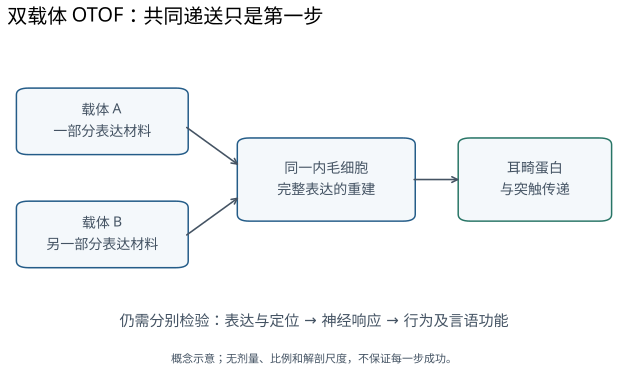
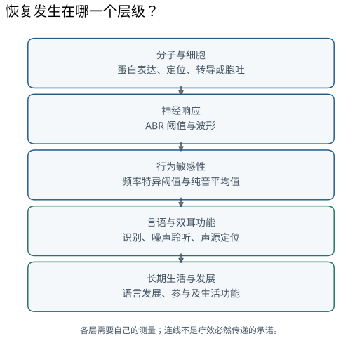
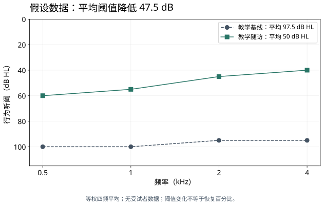

听力损失的基因治疗
Gene Therapy for Hearing Loss · 深度词条 · Draft · 2026-11-17
听力损失的基因治疗（gene therapy for hearing loss）是通过向相关细胞递送遗传物质、调控基因表达或改变特定遗传序列，尝试恢复、维持或重建听觉功能的一类干预技术。它的直接作用对象是分子与细胞过程；最终是否改善听觉，还取决于耳蜗结构、听神经和中枢系统能否利用恢复的输入。以 OTOF 为例，目标是在仍存活的内毛细胞中恢复耳畸蛋白相关的突触传递，而不是把所有类型的听力损失视为同一种疾病。12
基因治疗既不等同于基因编辑，也不等同于毛细胞再生。递送正常基因可以补充缺失功能，而不直接修正患者原来的 DNA 序列；编辑可用于失活致病等位基因或纠正特定变异；表达调控也可用于诱导细胞命运变化。这些策略面对的病理问题、递送要求与证据成熟度不同。45614
截至本条目文献核验日，OTOF 已有多项人体研究；美国 FDA 于 2026 年 4 月 23 日加速批准 OTARMENI（lunsotogene parvec-cwha）。这一批准具有明确的基因、听力及耳部条件，不能外推为所有遗传性耳聋、噪声性听力损失或年龄相关听力损失均已有获批基因治疗。1516
从听力表现追溯治疗靶点
相似听力图可以来自不同病理过程
听力损失描述的是功能改变；治疗设计还需要追问功能链在哪一处受阻。耳蜗中的机械振动、毛细胞机械电转导、内毛细胞递质释放和听神经放电是相互衔接的步骤。TMC1 相关模型涉及机械电转导，OTOF 相关模型则显示，即使细胞存在钙电流和带状突触形态，递质胞吐仍可严重受损。因此，同样表现为重度或极重度听力损失，所需递送的基因及目标细胞未必相同。14
病因确证也不仅是检出一个基因名称。需要结合变异的致病性、所在等位基因、遗传方式与表型的一致性。双等位基因功能缺失、显性异常蛋白作用以及已经形成的组织损伤，对治疗策略提出不同要求。OTARMENI 说明书要求确认双等位基因 OTOF 致病或可能致病变异；这个条件不能用“携带一个 OTOF 变异”替代。15
可修复功能与可用细胞是两道条件
基因补充需要有能够接受载体并表达蛋白的细胞。分子缺陷可以纠正，不代表已经丢失的细胞会自动重新出现。即使局部传递恢复，神经通路与长期听觉经验也会影响行为结果。对 OTOF 治疗，外毛细胞功能检查提供耳蜗状态信息；对细胞再生，研究还必须证明新细胞具有适当的转导、突触和连接功能。二者不能共享同一个“恢复听力”的判断标准。31214
这形成了一个实用阅读顺序：先辨认病因，再定位受损过程，随后检查目标细胞是否保留，最后评价干预后各层功能是否改善。此顺序是本词条的教学框架，不是临床筛选算法；具体患者的适用性仍依赖对应产品说明书或试验方案。
不同治疗策略如何选择
表中策略分别依据原始实验，不是按临床有效性排序。245614
补充正常功能不一定能抵消异常功能
在功能缺失情境下，补充足量且定位合适的正常蛋白可能恢复过程。若异常蛋白持续干扰正常系统，仅增加正常蛋白可能不充分。Gao 等在携带显性 Tmc1 变异的小鼠中，递送 Cas9 与向导 RNA 复合物，优先破坏致病等位基因，观察到较好的毛细胞存活及听觉反应。这个结果支持“有选择地减少异常作用”的机制，并不证明所有显性耳聋适用同一编辑方案。5
Yeh 等针对另一种隐性 Tmc1 点变异使用碱基编辑，观察到感觉转导恢复及短期低频听觉改善。两项工作虽然都涉及 Tmc1，遗传方式、编辑目标和结果持久性却不同。尤其“暂时改善”是后一研究的重要边界，不能在概括时删去。判断编辑策略是否成立，需要把分子纠正比例、被纠正的细胞类型、功能恢复和随访期限放在一起。6
基因表达抑制属于更广的技术路线，本词条用等位基因失活的原始研究说明其治疗逻辑，不把所有 RNA 药物、反义寡核苷酸或小分子调控剂统一归为同一种获批基因治疗产品。技术机制和监管分类需要分别核对。
载体、表达控制与内耳递送
递送链中每一步都可能限制结果
递送材料进入耳蜗之后，还需要到达目标细胞、进入细胞并形成足够的功能性表达。衣壳影响转导特征，启动子影响表达的细胞范围和强度，转基因构建影响最终蛋白的形式。载体基因组数量是给药或制造指标，不能直接解释为成功修复的毛细胞数，更不能换算成恢复了多少听力。7
DB-OTO 的临床前开发比较了不同启动子构建，在小鼠及相关模型中评估表达；研究强调毛细胞定向表达对耳畸蛋白安全表达的重要性。这说明治疗开发不仅是“把正确基因送进去”，还必须控制它在哪里、以怎样的方式表达。某一衣壳在小鼠耳蜗中的表现也不能自动代表人耳中的分布。7
为什么 OTOF 常采用双 AAV
腺相关病毒（adeno-associated virus，AAV）是多项内耳研究使用的递送载体。完整 OTOF 编码序列超过常规单个 AAV 的包装能力，因此研究者将表达材料拆分到两个载体中，依靠同一目标细胞接收两部分并重建完整表达。2019 年的两项动物研究分别提供了双 AAV 恢复耳畸蛋白表达、突触功能和听觉响应的证据。23
“双载体”增加了一道共同递送要求。若某个细胞只收到一部分，便不能简单视为完成修复；若两部分均进入，但重建或表达不足，也可能留下功能限制。不同双 AAV 产品的衣壳、启动子、拆分设计、剂量及工艺可以不同，所以 AAV1-hOTOF、采用 Anc80L65 衣壳的 OTOF 方案与 DB-OTO 不应写成同一制剂的不同名称。781011

图 1 双载体 OTOF 治疗的概念链。两部分材料在同一目标细胞中形成完整表达，随后才可能影响蛋白功能、突触传递与听觉。箭头表示过程依赖，不表示每一步均成功；图中省略具体重建分子结构、剂量和解剖尺度。原创教学示意，依据双 AAV 及 DB-OTO 临床前研究。[2](#ref-gt-akil)[3](#ref-gt-almoyed)[7](#ref-gt-dbmouse)
局部递送也是一项耳科操作
Lv 等人体研究采用经圆窗向耳蜗给药。局部接近目标组织有利于递送，但内耳液体空间及感觉结构对操作提出要求；药物本身、手术过程和围手术期处理都可能影响安全性。OTARMENI 说明书明确列出操作相关风险及内耳可达性的限制。因此，疗效和不良事件应按完整干预过程解释，不能只讨论载体而忽略递送。815
本词条介绍递送原理，不提供手术、配药或免疫处理步骤。剂量也不在不同制剂之间换算：相同的载体基因组单位不保证相同活性、细胞分布或安全范围。
OTOF 为什么成为代表性案例
从蛋白缺失到突触接口修复
OTOF 编码耳畸蛋白（otoferlin），它参与内毛细胞的突触囊泡胞吐。Roux 等的缺失小鼠实验显示，钙电流及部分突触形态可保留，而胞吐几乎消失。这个分离现象使治疗目标变得具体：机械输入后形成的细胞电活动，需要通过正常递质释放才能有效驱动听神经。1
补充 OTOF 的目标是恢复这一接口。在 Al-Moyed 等研究中，快速胞吐得到恢复，但囊泡补充能力及部分结构并未完全达到正常水平。该结果提醒读者，同一细胞过程也包含多个环节，单项恢复不能代表整个系统恢复；ABR 阈值和持续刺激下的编码能力也不是相同问题。3
外毛细胞功能正常不代表整个耳蜗正常
耳声发射主要提供与外毛细胞及耳蜗机械功能有关的证据。内毛细胞突触接口受损时，部分上游功能仍可能存在。因而，保留耳声发射与明显听觉障碍并不必然矛盾；同样，记录到发射也不能证明 OTOF 就是病因。需要把分子诊断、外周功能和神经响应组合起来解释。112
2026 年多中心研究发现，基线可记录的畸变产物耳声发射数量及部分变异特征与恢复程度有关。这是特定研究中的关联，不能直接作为普遍预测公式，也不能据此保证某个患者的疗效。它的价值是提示：基因名称相同的人，治疗前的耳蜗状态仍可能不同。12
人体研究怎样推进证据
代表性研究与回答的问题
表格来自各研究摘要及正式书目信息，不用于间接排名产品。Lv、Wang、Jiang 和 Fan 报告同一注册号 ChiCTR2200063181，属于同一研究计划的不同报告；本条目不相加其人数，也不把这些论文视为四项完全独立的重复验证。8910111213
为什么单臂研究有价值，也有局限
罕见病早期研究需要先确认可行性、剂量与安全性。若治疗前已有明确而持续的严重功能缺损，治疗后出现可重复神经响应和行为改善，证据可以具有重要意义。但没有随机对照时，仍需考虑测量成熟、学习效应、康复训练及随访选择等因素。行为结果尤其需要保留年龄、测试任务和辅助设备条件；研究中的多层测量有助于判断改善是否一致。811
不同研究报告的成功比例不能直接比较。一项研究可定义“较基线改善”，另一项定义“达到某阈值”，还有研究同时考察多个频率或言语任务。分母可能是患者、耳或达到某次随访的人数。只有终点、时点、人群与统计单位均清楚，比例才有可解释性。
临床证据还需要考虑来源独立性。由同一试验扩展出的论文提供更长时间或不同问题的信息，确实增加知识，但不会自动增加独立样本。不同研究团队和不同载体方案能提供互补证据，却也引入不同入组及测量条件；不能用简单合并百分比消除这些差异。
怎样评价治疗后的听觉
从分子作用到生活功能
这一分层用于解释多项研究的终点，不是正式分级量表。动物细胞实验与人体功能研究提供的信息互补，不能互相替代。3911
听性脑干反应的 dB nHL 与行为测听的 dB HL 使用不同参考和测量方法。点击声 ABR 又不同于频率特异的短纯音 ABR。比较治疗前后时，应保持刺激、校准及判定标准一致；不能把两个报告中单位不同的数值直接相减。对很小的儿童，行为任务也要与发展水平相容，行为测试越来越可靠本身不应被全部归为药物效应。

图 2 治疗效果的五个观察层级。各框代表不同问题，连接线表示可能的功能联系；没有数值、比例或时间尺度，不表示前一层改善就保证后一层改善。原创教学分类，依据细胞功能、双耳治疗及 DB-OTO 研究。[3](#ref-gt-almoyed)[9](#ref-gt-wang)[11](#ref-gt-dboto)
一个纯音平均值的教学例子
以下完全是教学设定，不是某位受试者的数据。假设同一耳在相同条件下，0.5、1、2、4 kHz 四个频率的行为阈值由 100、100、95、95 dB HL，变为 60、55、45、40 dB HL。若事先规定对这四个频率作等权算术平均，则治疗前后的纯音平均值分别为 97.5 和 50 dB HL，平均阈值降低 47.5 dB。
这个计算说明“平均阈值改善很多”，但不能推出“听力恢复了 47.5%”。dB 是对数标度，阈值又是任务与频率相关的检测指标；它不是一个可以直接换成康复百分比的线性分数。50 dB HL 的平均值也不能写成正常听力，更不能自动推算言语识别率。
平均数还会隐藏频率差异。上述治疗后低频阈值高于高频，两个患者即使平均值相同，也可能有不同听力图。因此，报告时应保留各频率阈值、个体轨迹和离散程度，不能只展示一条组平均曲线。若基线记录为“最大输出仍无反应”，它是受到测量上限限制的数据；把它当成恰好等于最大输出的数值，再计算精确改善量，会引入额外假设。图 3 特意使用均可测的假设阈值来避免这一问题。

图 3 听阈与纯音平均值的教学计算。横轴为四个频率，纵轴为 dB HL，按听力图习惯向下增大；圆点和方点区分两组假设数据。平均阈值降低 47.5 dB 不等于恢复 47.5% 听力，也不代表言语成绩。原创计算图，数据全部为本词条教学设定，不是临床疗效曲线。
作为真实研究对照，DB-OTO 论文中 9/12 参与者达到预设的 24 周行为阈值终点，3/12 达到平均正常听力敏感性。前者不能改写成“75% 恢复正常听力”。论文报告的达标比例置信区间较宽，也反映小样本估计的不确定性。11
双耳改善还需要双耳任务
两耳分别能检测声音，不等于已经验证正常的双耳信息利用。声源定位、噪声中言语识别和空间线索整合需要相应任务。在研究设计上，应记录声源位置、声级、目标与干扰的空间配置，并区分单耳、双耳及辅助设备条件。Wang 等把声源定位纳入双侧治疗观察，说明研究问题可以从“是否听到”推进到“如何利用两耳输入”。9
长期语言发展则需要更长时间和适当发展参照。新出现的外周输入并不会消除既往听觉经验的差异；因此，言语测量和康复条件应持续记录。相关测量背景可结合言语可懂度、空间听觉与听觉可塑性阅读。
安全性、治疗窗口与再次给药
没有观察到某类事件不等于风险为零
早期论文中的“未出现剂量限制性毒性”有特定定义和观察窗口。它既不等于完全没有不良事件，也不能排除罕见或迟发风险。Lv、Wang 及后续研究均记录了不良事件；更大样本研究还报告了三级事件。解释时需要保留严重程度、与治疗的关联判断、发生时间和随访长度，而不能只保留一个概括性的“安全”。8912
安全性至少涉及载体与表达、局部递送、炎症或免疫反应、前庭功能及长期变化。对编辑方案，还需额外考察编辑产物及非目标序列改变。动物中听阈改善可以支持后续开发，但不能证明人体长期风险已经排除。5615
治疗窗口不是一个普遍年龄上限
窗口既有细胞存活层面，也有感觉经验与发育层面。不同病因导致细胞和连接变化的时间不同，不应把新生小鼠有效的年龄直接换算成人类年龄。OTOF 人体研究已包含较宽年龄范围，但少数成人的结果不能定义所有成人的预后；观察到年龄与疗效相关，也不能单凭非随机分组确认年龄是唯一原因。21012
2025 年 Anc80L65 研究报告了年龄相关的探索性结果；2026 年 AAV1-hOTOF 研究也比较了年龄组。不同研究的人群、载体和样本分布不同，这些结果适合提出后续分层验证问题，而不是拼成统一的“最佳治疗年龄”。基线残存功能、变异类型、康复经历及测试能力都应同时考虑。1012
对侧耳治疗不等于同耳补打
AAV 初次给药可能诱导中和抗体，后续给药因此成为独立问题。Fan 等在 4 名既往接受治疗的儿童中，研究向对侧耳再次递送 AAV1-hOTOF，提供了有限样本中的初步证据。其观察涉及已有抗体、另一只耳和特定随访期限，不能推广为任何 AAV 均可反复注射，也不能说明同一耳疗效下降后补打有效。13
今后的研究需分别回答序贯双耳给药、首次无效后的补救及远期表达衰减后的再治疗。它们的受试组织状态和免疫背景不同，把它们合称“再次给药”会遮蔽重要差异。
与助听器、人工耳蜗和再生治疗的关系
助听器通过声学处理帮助使用残存听觉；人工耳蜗通过电刺激提供神经输入；OTOF 基因补充则试图恢复内毛细胞的生物传递接口。比较三种路径时，首先需要明确患者的分子病因、残存功能和可达到的任务表现，而非仅比较技术名称。11
某个基因治疗研究取得较好阈值，不能据此得出对人工耳蜗普遍优越的结论。不同治疗人群、随访和终点之间存在差异，缺少同条件比较时应保留不确定性。治疗后仍有听力或言语困难的人也可能需要持续的听力支持；技术的作用与康复过程需要共同评价。
OTARMENI 的美国说明书要求治疗耳既往未植入人工耳蜗，这是特定产品的适用条件。它不能扩大为“接受过任何人工耳蜗的人都不能接受任何基因治疗”，也不是鼓励为了未来技术而延迟当前听力支持的依据。15
毛细胞再生面对的是另一类问题。McGovern 等在成年小鼠中联合调控 Atoh1、Gfi1 和 Pou4f3，获得了具有若干毛细胞特征的细胞。这为细胞重编程提供证据，但表达标志蛋白、形成初步毛束或接受神经支配，仍不能代替完整听觉功能的验证。用基因工具诱导再生可属于广义基因干预，而 OTOF 补充本身并不是毛细胞再生。14
监管状态与尚未解决的问题
批准需要同时写明产品、地区与条件
美国 FDA 于 2026 年 4 月 23 日对 OTARMENI 作出加速批准。说明书适用于分子确证的双等位基因 OTOF 变异相关严重感音神经性听力损失，列出任一频率大于 90 dB HL、保留外毛细胞功能及同耳既往无人工耳蜗等条件。批准依据包括 24 周行为纯音平均阈值改善，持续批准仍涉及确认临床获益。1516
这段信息的监管地区是美国，核验日期是 2026 年 11 月 17 日；不构成中国或其他地区上市及可及性的声明。试验注册、论文发表、监管批准、实际供应和支付安排也各是不同状态。本文不根据其中任何一项推断其他状态。
从可行性走向持久、可解释的获益
当前仍需回答的问题包括：哪些基线指标能可靠预测个体获益；不同频率、声级和复杂聆听任务能恢复到何种程度；早期阈值变化如何关联长期语言发展；表达及安全性可维持多久；以及在更复杂病因或组织损伤中能否获得同样清晰的治疗靶点。101112
合理的后续研究应预先定义主要终点，持续报告个体数据和失访情况，公开失败或改善有限的结果，并明确多篇论文之间的队列重叠。对于“最长随访”的报告，还需给出各时点人数和分母，避免把少数长期参与者的结果误解为全队列长期结果。这些要求服务于一个核心问题：观察到的改善对什么人、在什么条件下、能维持多长时间。
参见与来源说明
本条目以原始研究摘要、正式书目信息和美国官方监管材料为依据，未声称完成所有试验、地区或基因的系统综述。正文中的研究规模及结果只使用已核对的公开信息；未从摘要补造手术细节或各时间点完整数据。三张图均为原创教学图，其中图 3 使用明确列出的假设数据。检索、来源访问范围、研究队列重叠及 AI 辅助用途另存于本项目的 2026-11-17 研究记录；Draft 状态表示尚未完成具名专业审阅。
参考文献
[1] Roux I, Safieddine S, Nouvian R, Grati M, Simmler MC, Bahloul A, Perfettini I, Le Gall M, Rostaing P, Hamard G, Triller A, Avan P, Moser T, Petit C. (2006). Otoferlin, defective in a human deafness form, is essential for exocytosis at the auditory ribbon synapse.. Cell。访问范围：abstract。耳畸蛋白缺失与胞吐障碍；动物机制。2026-11-17 核对 Europe PMC 正式书目信息与摘要；未据摘要推断完整方法或逐时点人数。
[2] Akil O, Dyka F, Calvet C, Emptoz A, Lahlou G, Nouaille S, Boutet de Monvel J, Hardelin JP, Hauswirth WW, Avan P, Petit C, Safieddine S, Lustig LR. (2019). Dual AAV-mediated gene therapy restores hearing in a DFNB9 mouse model.. Proceedings of the National Academy of Sciences of the United States of America。访问范围：abstract。双载体在成熟小鼠中的功能恢复。2026-11-17 核对 Europe PMC 正式书目信息与摘要；未据摘要推断完整方法或逐时点人数。
[3] Al-Moyed H, Cepeda AP, Jung S, Moser T, Kügler S, Reisinger E. (2019). A dual-AAV approach restores fast exocytosis and partially rescues auditory function in deaf otoferlin knock-out mice.. EMBO molecular medicine。访问范围：abstract。快速胞吐与囊泡补充恢复不完全；动物实验。2026-11-17 核对 Europe PMC 正式书目信息与摘要；未据摘要推断完整方法或逐时点人数。
[4] Askew C, Rochat C, Pan B, Asai Y, Ahmed H, Child E, Schneider BL, Aebischer P, Holt JR. (2015). Tmc gene therapy restores auditory function in deaf mice.. Science translational medicine。访问范围：abstract。Tmc补充与感觉转导；动物实验。2026-11-17 核对 Europe PMC 正式书目信息与摘要；未据摘要推断完整方法或逐时点人数。
[5] Gao X, Tao Y, Lamas V, Huang M, Yeh WH, Pan B, Hu YJ, Hu JH, Thompson DB, Shu Y, Li Y, Wang H, Yang S, Xu Q, Polley DB, Liberman MC, Kong WJ, Holt JR, Chen ZY, Liu DR. (2018). Treatment of autosomal dominant hearing loss by in vivo delivery of genome editing agents.. Nature。访问范围：abstract。显性Tmc1等位基因选择性失活；动物实验。2026-11-17 核对 Europe PMC 正式书目信息与摘要；未据摘要推断完整方法或逐时点人数。
[6] Yeh WH, Shubina-Oleinik O, Levy JM, Pan B, Newby GA, Wornow M, Burt R, Chen JC, Holt JR, Liu DR. (2020). In vivo base editing restores sensory transduction and transiently improves auditory function in a mouse model of recessive deafness.. Science translational medicine。访问范围：abstract。隐性Tmc1碱基编辑及暂时听觉改善；动物实验。2026-11-17 核对 Europe PMC 正式书目信息与摘要；未据摘要推断完整方法或逐时点人数。
[7] Chung Y, Koehler SD, Cancelarich S, Gibson TM, Pregernig G, Becker L, Artinian QA, Goodliffe JW, Pan N, Quigley TM, Senapati A, Slade PG, Smith LM, So KS, Zhang X, Corrales CE, Weber P, Macdonald LE, Zambrowicz B, Economides AN, Kyratsous CA, Burns JC, Palermo AT, Sabin LR, Lee J, Valayannopoulos V, Whitton JP, Drummond MC. (2025). Functional, sustained recovery of hearing in Otoferlin-deficient mice using DB-OTO, a hair-cell-specific AAV-based gene therapy.. Molecular therapy. Methods & clinical development。访问范围：abstract。DB-OTO启动子、双载体与定向表达；临床前。2026-11-17 核对 Europe PMC 正式书目信息与摘要；未据摘要推断完整方法或逐时点人数。
[8] Lv J, Wang H, Cheng X, Chen Y, Wang D, Zhang L, Cao Q, Tang H, Hu S, Gao K, Xun M, Wang J, Wang Z, Zhu B, Cui C, Gao Z, Guo L, Yu S, Jiang L, Yin Y, Zhang J, Chen B, Wang W, Chai R, Chen ZY, Li H, Shu Y. (2024). AAV1-hOTOF gene therapy for autosomal recessive deafness 9: a single-arm trial.. Lancet (London, England)。访问范围：abstract。6名儿童单耳治疗、26周随访及安全性。2026-11-17 核对 Europe PMC 正式书目信息与摘要；未据摘要推断完整方法或逐时点人数。
[9] Wang H, Chen Y, Lv J, Cheng X, Cao Q, Wang D, Zhang L, Zhu B, Shen M, Xu C, Xun M, Wang Z, Tang H, Hu S, Cui C, Jiang L, Yin Y, Guo L, Zhou Y, Han L, Gao Z, Zhang J, Yu S, Gao K, Wang J, Chen B, Wang W, Chen ZY, Li H, Shu Y. (2024). Bilateral gene therapy in children with autosomal recessive deafness 9: single-arm trial results.. Nature medicine。访问范围：abstract。5名儿童双侧治疗、定位及随访差异。2026-11-17 核对 Europe PMC 正式书目信息与摘要；未据摘要推断完整方法或逐时点人数。
[10] Qi J, Zhang L, Lu L, Tan F, Cheng C, Lu Y, Dong W, Zhou Y, Fu X, Jiang L, Tan C, Zhang S, Sun S, Song H, Duan M, Zha D, Sun Y, Gao X, Xu L, Zeng FG, Chai R. (2025). AAV gene therapy for autosomal recessive deafness 9: a single-arm trial.. Nature medicine。访问范围：abstract。Anc80L65方案、10人及年龄相关探索分析。2026-11-17 核对 Europe PMC 正式书目信息与摘要；未据摘要推断完整方法或逐时点人数。
[11] Valayannopoulos V, Bance M, Carvalho DS, Greinwald JH, Harvey SA, Ishiyama A, Landry EC, Löwenheim H, Lustig LR, Manrique M, Nash R, Polo R, Pritchett CV, Rubinstein JT, Shearer AE, Del Castillo I, Anderson JJ, Corrales CE, Quigley TM, Riggs WJ, Weber P, Wilson G, Irvin SC, Hassan HE, Chen Y, Liu R, Drummond MC, Sabin LR, Musser BJ, Yancopoulos GD, Kyratsous CA, Herman GA, Baras A, Whitton JP, CHORD Study Group. (2026). DB-OTO Gene Therapy for Inherited Deafness.. The New England journal of medicine。访问范围：abstract。12名儿童、24周终点与正常敏感性的区分。2026-11-17 核对 Europe PMC 正式书目信息与摘要；未据摘要推断完整方法或逐时点人数。
[12] Jiang L, Cheng X, Lv J, Chen Y, Chen X, Zhai R, Zhang L, Han L, Zhang Y, Zhang J, Deng D, Huang Z, Cao Q, Zhang X, Wang D, Wang Y, Chen L, Yu S, Guo L, Zhang B, Wang H, Zhou Y, Dai L, Wang W, Zhang L, Yin Y, Cheng G, Zhou Z, Wang W, Chen B, Lu W, Jiang H, Gao Z, Shi D, Xiong Y, Zhao Y, Yuan W, Wang Q, Feng G, Li H, Chen ZY, Shu Y. (2026). Multicentre gene therapy for OTOF-related deafness followed up to 2.5 years.. Nature。访问范围：abstract。42人、多中心、最长2.5年与基线因素关联。2026-11-17 核对 Europe PMC 正式书目信息与摘要；未据摘要推断完整方法或逐时点人数。
[13] Fan X, Zhang L, Gao Z, Han L, Yang P, Wang D, Yu H, Cao Q, Jiang L, Chen X, Zhang X, Cheng X, Chen L, Zhong J, Lv J, Wang W, Dai L, Zhou Z, Shi L, Chen Y, Zhu B, Hu S, Tang H, Chen ZY, Wang W, Chen B, Li H, Shu Y. (2026). Re-administration of AAV-mediated gene therapy for OTOF-related deafness: a single-arm trial.. Nature medicine。访问范围：abstract。4名儿童对侧耳再次给药，不代表同耳补打。2026-11-17 核对 Europe PMC 正式书目信息与摘要；未据摘要推断完整方法或逐时点人数。
[14] McGovern MM, Ghosh S, Dupuis C, Walters BJ, Groves AK. (2024). Reprogramming with Atoh1, Gfi1, and Pou4f3 promotes hair cell regeneration in the adult organ of Corti.. PNAS nexus。访问范围：abstract。成年小鼠毛细胞样细胞重编程，不证明人类功能康复。2026-11-17 核对 Europe PMC 正式书目信息与摘要；未据摘要推断完整方法或逐时点人数。
[15] U.S. Food and Drug Administration; Regeneron Pharmaceuticals, Inc. (2026). OTARMENI prescribing information (Revised 4/2026). FDA product label。访问范围：documentation。美国适应证、外毛细胞功能与同耳既往植入限制、给药相关风险和加速批准条件；2026-11-17核对官方说明书相关章节。
[16] U.S. Food and Drug Administration (2026). FDA Approves First-Ever Gene Therapy for Treatment of Genetic Hearing Loss Under National Priority Voucher Program. FDA news release, April 23, 2026。访问范围：documentation。美国2026-04-23加速批准及持续批准的确认性要求；不支持其他地区可及性。